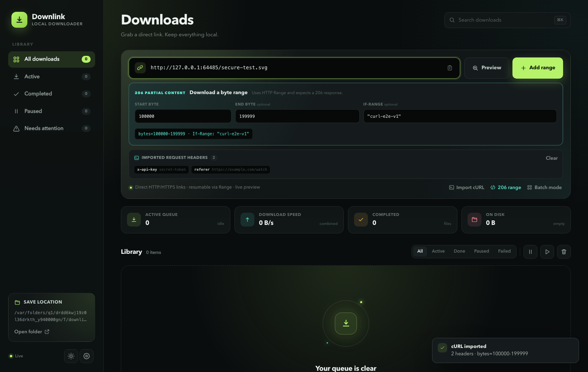
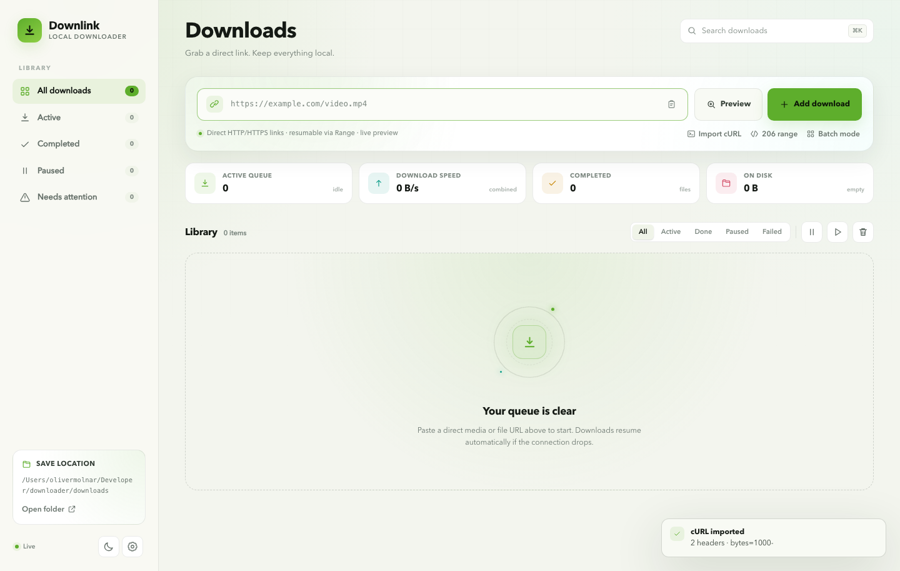

True resumable transfers
Pause, quit, reboot, or lose the connection. Downlink continues from the exact
byte with Range, If-Range, ETag, and Last-Modified
validation.
Local-first · Pure Bun · Zero runtime dependencies
Downlink is a local-first media and file downloader with true resumable transfers, live preview, a cURL importer, and a queue that survives restarts. No accounts. No cloud. No telemetry.




A queue that keeps state, speed, and history in one local view.
The toolkit
Not a browser tab that forgets what happened. Downlink owns the transfer from first byte to final filename, and keeps the receipts in SQLite.
Pause, quit, reboot, or lose the connection. Downlink continues from the exact
byte with Range, If-Range, ETag, and Last-Modified
validation.
Stream video, audio, and images from the growing .part file. The
local preview endpoint speaks byte ranges, so seeking works mid-transfer.
Paste “Copy as cURL” and watch the parsed URL, range, and headers appear as you type. Referer, cookies, and auth carry into every request.
Enter a start and end byte with an optional validator. Downlink requires a
206 Partial Content and saves only that segment.
Per-file speed, ETA, progress, combined throughput, and queue counts pushed straight to the UI. No polling, no stale numbers.
Interrupted jobs are recovered after a restart. Pause all, resume all, retry, cancel, clear history, and set a fair global speed limit.
Content-Disposition and filename* support, safe
sanitization, MIME-based extension inference, and collision-free
name (1).ext paths.
Direct-file downloads, a local SQLite database, and no accounts, analytics, cloud service, or external database. Your files stay yours.
Resume, for real
A download writes to <filename>.part and stores its byte count
in SQLite. On resume, Downlink asks for exactly what’s missing and rewrites the
final file only when it’s complete.
Range: bytes=<downloaded>- with the stored validator.
206. Falls back to a clean restart if the file changed.
200 in explicit 206 mode instead of saving the whole file.
.part to the final name and marks the job complete.
# paused at byte 432,144,384
GET /video.mp4
Range: bytes=432144384-
If-Range: "6aa88fff-310fd51d"
Referer: https://example.com/watch
206 Partial Content
Content-Range: bytes 432144384-823121180/823121181
ETag: "6aa88fff-310fd51d"
↳ appending 390,976,797 bytes to
video.mp4.part
✓ download.mp4 completeBring the request
Some files need a referer, a cookie, or a signed header. Copy the request from DevTools → Network → Copy as cURL, then paste it into Downlink.
If-Range automatically.
Downlink is a direct-file downloader. It does not bypass authentication, DRM, or anti-bot protections. Only download content you have permission to save.
curl --url 'https://example.com/video.mp4' \
-H 'referer: https://example.com/watch' \
-H 'range: bytes=432144384-823121180' \
-H 'if-range: "6aa88fff-310fd51d"' \
-H 'user-agent: Mozilla/5.0'Private by architecture
There is no account to create and no server in the middle. Downlink binds to localhost, writes to a folder you choose, and remembers state in a single SQLite file.
No analytics, tracking pixels, or crash reporting.
Requests go from your machine to the source. That’s it.
Queue, settings, and history live in data/downlink.db.
The server binds to 127.0.0.1 unless you say otherwise.
Quickstart
Downlink needs Bun 1.2 or newer. There is no framework, no build step for the app, and no service to sign up for.
# clone the source
git clone https://github.com/403access/downlink.git
cd downlink
# install dev types, then run
bun install
bun run dev
→ http://127.0.0.1:3000MP4, WebM, MP3, FLAC, JPG, ZIP, PDF — anything served over HTTP or HTTPS.
Inspect size, type, range support, and validators before committing.
Quit the server, reboot, or lose Wi-Fi. Resume continues from the exact byte.
FAQ
No. Downlink is a direct-file downloader for URLs that return a
file. HLS and DASH manifests (.m3u8, .mpd) are detected
and rejected rather than saved incorrectly. It does not bypass authentication,
DRM, or anti-bot protections.
The .part file and its byte count stay on disk in SQLite. When you
start Downlink again, interrupted jobs are recovered, and resume sends a range
request for the remaining bytes. If the remote file changed, Downlink starts it
over cleanly.
By default, to ./downloads next to the app. You can change the save
folder in Settings or with DOWNLOAD_DIR. Queue state and history
live in ./data/downlink.db.
No. Downlink is designed to run on your own machine and bind to localhost. Hosting it would mean uploading your downloads, headers, and cookies somewhere else — the opposite of the point.
Yes. Downlink runs on macOS, Linux, and Windows with Bun 1.2+. “Reveal” uses
open, explorer, or xdg-open depending on
the platform.
Use Import cURL. In your browser, open DevTools → Network, right-click the request, and choose Copy → Copy as cURL. Paste it into Downlink; the URL, range, and safe request headers are imported and stored with the job.
Ready when you are
A downloader that respects your bandwidth, your files, and your privacy.